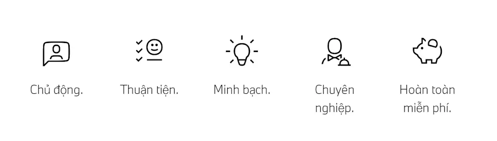

Chúng tôi luôn chủ động và sẵn sàng hỗ trợ Quý khách trong mọi tình huống. Thông báo lỗi trên xe và lời nhắc cho lần bảo dưỡng sắp tới, gửi tín hiệu khi xe gặp sự cố trên đường – chúng tôi chủ động cung cấp giải pháp tốt nhất và phù hợp cho xe BMW của Quý khách. Hãy thư giãn và tận hưởng những lợi ích từ sự chăm sóc chủ động của Dịch vụ BMW.
NHỮNG LỢI ÍCH TỪ DỊCH VỤ CHĂM SÓC CHỦ ĐỘNG BMW PROACTIVE CARE.
NHỮNG GÌ BẠN CẦN.
Các hạng mục cần thực hiện trong dịch vụ Chăm sóc chủ động:
-
Kích hoạt tài khoản BMW ConnectedDrive của Quý khách.
-
Chiếc xe của Quý khách đã được liên kết với tài khoản My BMW App
-
Dữ liệu cá nhân của Quý khách được đăng ký theo tài khoản BMW, với số điện thoại, địa chỉ email hiện tại và thông tin người thân đồng sở hữu xe BMW.
Để chúng tôi có thể liên hệ với bạn, vui lòng đồng ý về các Chính sách về Quyền riêng tư thông qua ứng dụng trên xe, và các biểu mẫu từ Đại lý BMW được ủy quyền hoặc từ BMW AG. Để thuận tiện hơn trong việc liên lạc, Quý khách chỉ cần kích hoạt tính năng đẩy thông báo trong ứng dụng My BMW.
CÁCH THỨC HOẠT ĐỘNG
Các cảm biến trong xe sẽ phát hiện nhu cầu bảo dưỡng hoặc các lỗi tính năng có thể xảy ra ở giai đoạn đầu và phát tín hiệu truyền đến Trung tâm tiếp nhận thông tin của BMW. Chúng tôi sẽ chủ động liên hệ với Quý khách thông qua ứng dụng My BMW, địa chỉ email hoặc trực tiếp thông qua ứng dụng trên xe BMW. Trong trường hợp khẩn cấp, Quý khách sẽ nhận được cuộc gọi thoại từ chúng tôi.
TỐI ƯU HÓA HỖ TRỢ HẰNG NGÀY
Chúng tôi hiểu Quý khách đôi khi rất bận rộn và có thể quên lịch bảo dưỡng định kỳ. Vì thế chúng tôi sẽ hỗ trợ nhắc Quý khách! Nếu xe của Quý khách đến thời hạn kiểm tra và bảo dưỡng hệ thống phanh, Quý khách sẽ nhận được thông báo từ chúng tôi để có thể sắp xếp thời gian thuận tiện nhất và mang xe đến Trung tâm dịch vụ ủy quyền BMW . Trường hợp xe của Quý khách gặp sự cố bất ngờ, Quý khách sẽ được hỗ trợ nhanh chóng từ đội ngũ chuyên gia Hỗ trợ sự cố trên đường BMW Roadside Assistance
Liên hệ.
Chúng tôi sẽ liên hệ quý khách thông qua ứng dụng My BMW, email hoặc gửi tin nhắn trực tiếp đến xe của quý khách. Trong trường hợp khẩn cấp, chúng tôi sẽ liên hệ trực tiếp thông qua điện thoại.
Đặt hẹn dịch vụ
Chúng tôi sẽ đề xuất thời gian và quý khách có thể tùy chọn thời điểm thích hợp để thực hiện dịch vụ tại Trung tâm dịch vụ.
Giao và nhận xe
Quý khách không thể sắp xếp thời gian giao và nhận xe? Chúng tôi sẽ giúp quý khách nhận xe và giao xe trực tiếp tại nhà sau khi thực hiện sửa chữa hoặc bảo dưỡng.
HỖ TRỢ SỰ CỐ TRÊN ĐƯỜNG BMW ROADSIDE ASSISTANCE
Chúng tôi luôn cam kết về chất lượng dịch vụ trong mọi tình huống: Chúng tôi luôn chủ động và sẵn sàng hỗ trợ quý khách trong trường hợp xảy ra tai nạn hoặc sự cố. Chúng tôi luôn hỗ trợ 24/7 bất kể ngày nghỉ.
Tìm hiểu thêm thông tinDỊCH VỤ KIỂM TRA PHANH BMW
Quý khách nhận được thông báo cần bảo dưỡng hệ thống phanh từ hệ thống cảm biến của xe? Chúng tôi sẽ kiểm tra hệ thống phanh bao gồm đĩa phanh, má phanh và dầu phanh, đồng thời đảm bảo các bộ phận đều được sửa chữa và hoạt động tốt.
Tìm Trung tâm dịch vụ chính hãng BMW gần bạnỨNG DỤNG MY BMW
Với BMW Proactive Care, hành trình trải nghiệm dịch vụ của quý khách sẽ trở nên dễ dàng hơn. Ứng dụng My BMW sẽ thông báo khi phát hiện vấn đề kỹ thuật của xe, chi phí ước tính và quy trình thực hiện dịch vụ. Nếu quý khách muốn kiểm tra tình trạng dầu phanh hay đặt hẹn dịch vụ trực tuyến, ứng dụng My BMW sẽ kết nối xe BMW của quý khách với trung tâm dịch vụ ủy quyền của chúng tôi.
Đi đến App Store với hệ điều hành iOS Đi đến Google Play với hệ điều hành AndroidNHỮNG CÂU HỎI THƯỜNG GẶP
Dịch vụ BMW với sự chăm sóc chủ đông là gì?
Proactive Care - sự chăm sóc chủ động từ dịch vụ BMW là sự cam kết về dịch vụ của BMW nhằm phát hiện và thông báo đến quý khách khi xe cần thực hiện bảo dưỡng hoặc phát hiện sớm lỗi kỹ thuật – mang đến quý khách sự phục vụ tận tâm nhất. Hệ thống cảm biến trên xe sẽ tự động phát hiện nhu cầu bảo dưỡng hoặc các lỗi chức năng, sau đó chuyển thông tin trưc tiếp đến BMW. Chúng tôi sẽ chủ động gửi thông báo thông qua ứng dụng My BMW, email hoặc gửi tin nhắn trực tiếp đến quý khách. Trong các trường hợp khẩn cấp, chúng tôi sẽ liên hệ quý khách qua cuộc gọi. Nếu xe cần được sửa chữa, phạm vi sửa chữa, chi phí và thời gian thực hiện sẽ được thông báo đến quý khách.
Lưu ý: Phạm vi bảo dưỡng thuộc Proactive Care có thể thay đổi theo từng quốc gia.
Tại sao tôi cần cập nhật thông tin chi tiết cho Proactive Care?
Chúng tôi cần thông tin liên hệ của quý khách để đảm bảo quý khách nhận được đầy đủ các lợi ích có trong Proactive Care. Thông qua đó, chúng tôi có thể liên hệ quý khách khi cần thiết. Quý khách vui lòng đảm bảo đồng ý cho phép chúng tôi sử dụng dữ liệu, bên cạnh đó xe BMW của quý khách đã được đăng ký tài khoản ConnectedDrive. Đây là cách duy nhất giúp BMW hỗ trợ quý khách toàn diện và phù hợp nhất.
Hệ thống CBS (Condition Based Service) là gì?
Hệ thống nhắc bảo dưỡng thông minh là một phần trong chăm sóc chủ động Proactive Care. Yếu tố then chốt trong việc cam kết dịch vụ của chúng tôi là phát hiện sớm các lỗi chức năng và thực hiện bảo dưỡng xe BMW đúng thời điểm. BMW đã thay thế việc bảo dưỡng theo thời gian cố định bằng việc bảo dưỡng dựa trên tình trạng thực tế của xe từ năm 1982. Hệ thống cảm biến và thuật toán đặc biệt sẽ chẩn đoán chính xác tình trạng vận hành xe BMW của quý khách. Hệ thống nhắc bảo dưỡng thông minh (CBS) đề xuất các dịch vụ cần thiết hiện tại và trong tương lai.
Bảng điều khiển hiển thị quãng đường và thời gian còn lại trước khi đến thời điểm bảo dưỡng cũng như các hoạt động kiểm tra khác, bao gồm:
-
Dầu động cơ
-
Má phanh: trước và sau riêng biệt
-
Dầu phanh
-
Kiểm tra xe
-
Kiểm tra theo quy định, tùy thuộc vào quy định của khu vực
-
Bộ lọc dầu Diesel
Xe BMW của tôi có nhận được lợi ích từ Proactive Care?
Proactive Care áp dụng trên toàn thế giới đối với tất cả các mẫu xe BMW sử dụng Hệ thống BMW Operating System 7 (từ phiên bản 07/2019) trở về sau. Để tận hưởng toàn bộ lợi ích từ dịch vụ Proactive Care, quý khách cần kích hoạt tài khoản BMW ConnectedDrive, và xe phải có BMW ID trên ứng dụng My BMW hoặc cổng My BMW Portal. Quý khách vui lòng cập nhật số điện thoại, địa chỉ email và lựa chọn trung tâm dịch vụ ủy quyên BMW mà Quý khách yêu thích vào mục thông tin các nhân trên BMW ID. Bên cạnh đó, quý khách vui lòng đồng ý với Chính sách quyền riêng tư về việc truyền dữ liệu trong xe ("Ensure Mobility" and "Smart Maintenance"). Sau cùng, để thuận tiện trong việc nhận thông tin, quý khách có thể kích hoạt chế độ nhận thông báo trên ứng dụng My BMW.